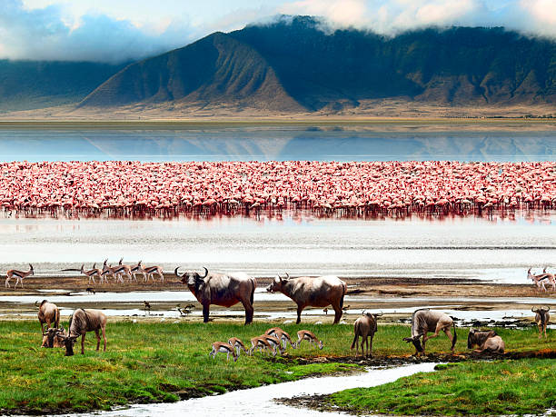

Tanzania, East African country situated just south of the Equator. Tanzania was formed as a sovereign state in
1964 through the union of the theretofore separate states of Tanganyika and Zanzibar. Mainland Tanganyika covers
more than 99 percent of the combined territories' total area.
Mafia Island is administered from the mainland, while Zanzibar and Pemba islands have a separate government
administration. Dodoma, since 1974 the designated official capital of Tanzania, is centrally located on the mainland.
Dar es Salaam is the largest city and port in the country.
The Tanzania mainland is bounded by Uganda, Lake Victoria, and Kenya to the north, by the Indian Ocean to the east,
by Mozambique, Lake Nyasa, Malawi, and Zambia to the south and southwest, and by Lake Tanganyika, Burundi, and Rwanda
to the west.
Tanzania

Source: Britannica.com
Things to do
-
Serengeti national park:
The Serengeti National Park is one of the largest parks in Tanzania; it has about 14,763 km2 of surface. When you are there, it feels like you were in the lion king film. The name of the park, Serengeti, means “endless plain” and is derived from the Masai language. *The Massai are a tribe of about 880,000 people, who live in southern Kenya and northern Tanzania.
-
Ngorongoro national park:
The Ngorongoro conservation zone is located in northern Tanzania. This area is situated inside the extensive volcanic crater of Ngorongoro. It serves as a habitat for the five great animals of the big game: elephants, lions, leopards, buffaloes, and rhinos. If you go, stand in from of the park before going down to the crater and you will be able to observe one of the best landscapes of Africa.
-
Trekking in Kilimanjaroa:
The well-know mountain all over the world. It is the highest peak of Africa with an altitude of 5.895 m. If you are trained, don't miss it! -
Relax in Zanzibar and Stone town:
Zanzibar is the heavenly island of Tanzania. Nothing to say that you cannot see in the pictures…go there and relax! Also, you should spend 1 or 2 days in Stone Town and enjoy its ambiance and night markets! Go on a food tour:
Tanzania is not very famous for its gastronomy, but they have its typical national dish: Ugali and chapatti. Ugali is a mix of cornmeal and water, as it is not very complex, they normally accompany it with some veggies or meat. Chapati is a kind of bread made of salt, white flour, oil, and water. There is another dish typical from Tanzania: Chips Mayai. The appearance is like a Spanish omelet but instead of potato omelet, they do French fries omelet. The appearance might not be amazing but the taste is! The best food Tanzania has are its tropical fruits, there are plenty such as mango, papaya, and bananas!
Photo Gallery
Hot-air ballooning in Serengeti National Park

Zanzibar
Serengeti National Park